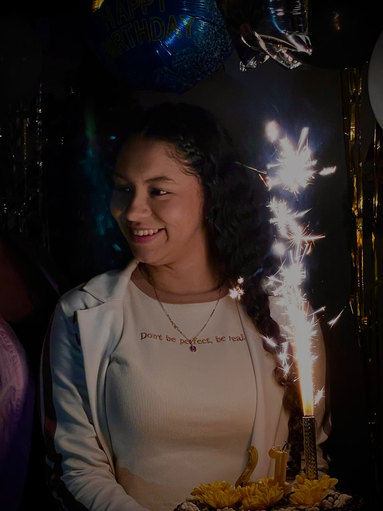
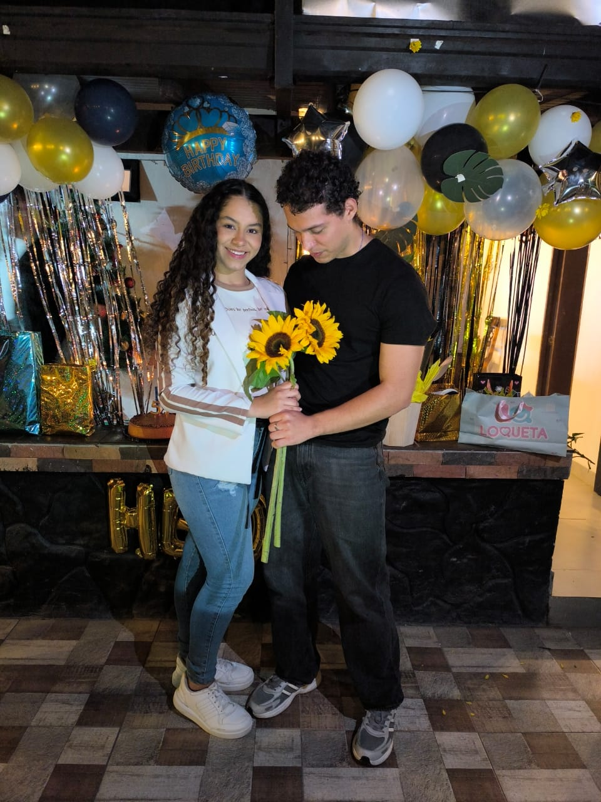

Para ti, mi cielo

Hoy es un día perfecto para recordarte lo increíble que eres. Tu forma de ver el mundo, tu energía y tu presencia hacen que cada momento junto a ti sea simplemente perfecto.
Admiro profundamente la persona en la que te has convertido. Tu dedicación, tu pasión por lo que haces y la manera en que tocas las vidas de quienes te rodean es algo verdaderamente especial. Tenerte a mi lado es el regalo más bonito que la vida me ha dado.
Espero que este nuevo año de vida te traiga todo lo que mereces: éxitos, felicidad y momentos inolvidables juntos. Que cada día sea una oportunidad para brillar aún más, y que yo pueda estar ahí para verte hacerlo.
Tu trabajo como psicóloga es una inspiración. La empatía y profesionalismo con los que te entregas a cada persona que ayudas hablan mucho de quién eres, y me enamoran cada vez más.
No cualquiera tiene la capacidad de escuchar de verdad, de comprender sin juzgar, y de guiar con sabiduría. Tu vocación es evidente en cada conversación, en cada gesto. Soy el más afortunado de poder verte brillar en lo que amas hacer.
Cada logro que has alcanzado es resultado de tu esfuerzo y tu pasión. Estoy seguro de que este nuevo año traerá aún más oportunidades para que sigas brillando en lo que tanto amas hacer, y estaré aquí para celebrar cada uno contigo.

Los girasoles tienen una cualidad hermosa: siempre buscan la luz, siempre crecen hacia el sol. Así eres tú: alguien que irradia luz propia y que me ilumina a mí también, mi cielo.
Tu energía positiva, tu inteligencia y tu forma de ser me inspiran cada día. Cada conversación, cada risa compartida, cada momento a tu lado vale más de lo que cualquier palabra puede decir.
Tu autenticidad, tu forma de ver la vida y tu capacidad de hacer sentir bien a todos son cualidades que no muchos poseen. Gracias por ser quien eres, y gracias por dejarme quererte.
Gracias por elegirme, mi cielo. Por dejarme ser parte de tu mundo y hacer de cada dia algo especial. No te vas a librar de mi tan facil.
Que este nuevo año te traiga todo lo que has soñado y más, y que yo pueda vivirlo contigo.
¡Feliz Cumpleaños!